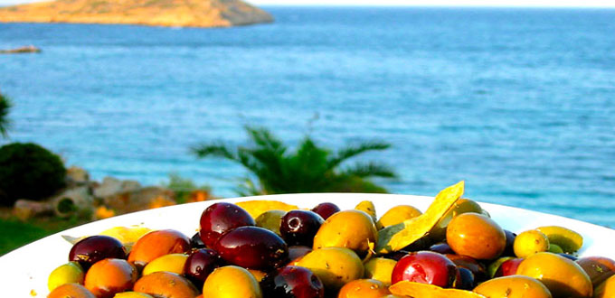
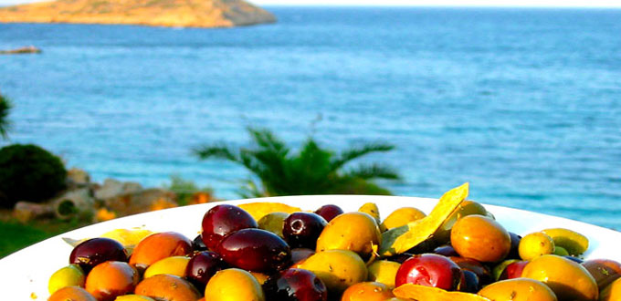
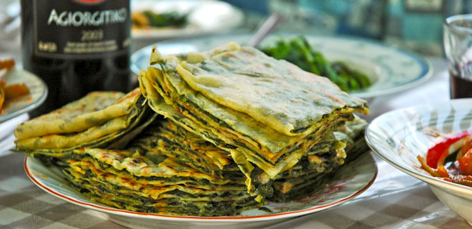
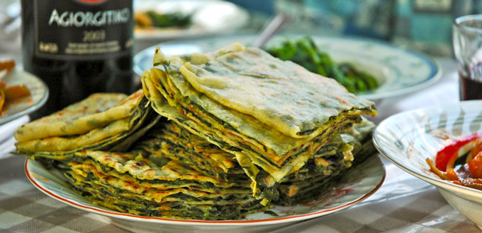

 



Extra Virgin Olive oil is the oil that has been extracted directly from raw olives without any additives. The extraction is usually done using mechanical means, without the use of any solvents, and under temperatures that will not degrade the oil (less than 30°C).
In chemical terms extra virgin olive oil is described as having a free acidity, expressed as oleic acid, of not more than 0.8 grams per 100 grams. It must be produced entirely by mechanical means.
Extra virgin is the highest quality and most expensive olive oil classification. It should have no defects and a flavor of fresh olives.
Greece is the 3rd largest olive oil producing country in the world in volume with around 400+ thousand tons per annum, and the 1st overall in quality averaging more than 80% extra virgin compared to barely 50% for Italy and a mere 30% for Spain. However, Greece is considered as No 1 in the world when it comes to quality. This is due mainly to 3 factors, firstly the indigenous olive varieties which have been selected over thousands of years for their exceptional taste and quality, secondly the growing conditions, great steady temperate climate and free draining soil, and thirdly the farming and processing methods followed (see Cretan olive oil).
There are around 140 million olive trees in Greece producing an average of 400,000 + tons of oil of which around 220,000 tons is consumed in Greece! The highest consumers in the world at about 22 Lt per person. The balance, of 180.000+ tons is exported. Around 10% of this is bottled and sold to mainly E.U. countries, North America, China and Japan (where it is preferred and normally sold at a higher price than other oils) and the balance is sold in bulk to Italy 75% and Spain the rest, who in turn blend it with their other lower grade oils (often including other seed oils) to improve quality and export it as their own extra virgin.
Though the olive tree (Olea Europaea), originated in the Mediterranean region, its cultivation has spread to all Continents as far away as China, North & South America, South Africa, Australia and New Zealand. There are hundreds of varieties throughout the traditional olive growing regions of the world, each specifically developed and evolved to suit local climatic conditions over thousands of years.
Generally speaking, colder and more humid climates promote more flesh growth on the olive fruit thus better varieties for pickling, and warmer drier climates produce better tasting olive oil due to better maturing conditions and the types of olives that thrive there.
Hence, the Central and Northern areas of Greece are more suited to producing table olives like the world famous Kalamata, Halkidiki, Amfissa etc. and the Southern areas (Crete, South Peloponnese, etc.) are better at producing olives for oil like Koroneiki, Tsounati, Athinolia, etc.
Of those, Koroneiki, often referred to as Psilolia, is the most popular choice for the production of olive oil not only due to its ability to grow in a wide range of altitude and terrain, but also it’s high volume and quality of oil and its great aromatic and medium fruitiness taste. This important variety is found in all of Greece and it represents close to 60% of the total Greek olive growing area. The intrinsic composition of Extra Virgin Olive Oil made of Koroneiki olives shows a medium-high content of oleic acid, with a medium content in palmitic acid and a medium-low content of linolenic acid. The stability of the olive oil in becoming rancid is considered very high.
Since extra virgin olive oil is simply pressed fruit juice without additives, the factors influencing its quality and taste include the varieties of olives used, the terroir and the countless decisions, production practices and the dedication of the producer. Olive oil tasters describe the positive attributes using the following terms:
Fruity: Having pleasant spicy fruit flavors characteristic of fresh ripe or green olives. Ripe fruit yields oils that are milder, aromatic, buttery, and floral. Green fruit yields oils that are Grassy, herbaceous, bitter, and pungent. Fruitiness also varies by the variety of olive.
Bitter: Creating a mostly pleasant acrid flavor sensation on the tongue.
Pungent: Creating a peppery sensation in the mouth and throat
Crete is the southernmost part of Greece/Europe extending well towards North Africa and the Libyan Sea. It is often called the blessed island because of its location, great warm climate and fertile plains. Indeed it has been fought over more than any other piece of land since the ancient times, firstly occupied by the Minoans, the first great civilisation in Europe dating back nearly 5,500 years ago.
Since then it has been occupied at different times by the Dorians and other Northern Greek tribes, the Romans, Venetians, Moors from North Africa, and the Turks. The island of Crete has some 40 million olive trees, nearly 30% of the total grown in Greece producing nearly 150,000 tons of olive oil.
Most of the growing is done by small plot owners, ranging from a few trees to a few hundred due to handing down the land from generation to generation.
They grow olives mostly as a supplement to their normal income and each family member helps to grow and pick the olives at harvest time therefore saving on labour costs and making sure that their trees are kept healthy and productive. The fruit is picked at the most optimum time for the best quality olive oil. Without any doubt, Cretan olive oil is among the best in the world.
There are several grades of olive oil depending on the production methods, pressing and storing and the variety and maturity and condition of the fruit when picked.
Our quality Cretan extra virgin olive oil is mostly 0 – 0.6% and premium extra virgin 0 – 0.3% acidity.
This is achieved by “cold pressing” the fruit at the earliest possible time after it is picked, generally within 24 hours.
We use state of the art facilities with centrifugal presses capable of pressing several thousand kg of olives per hour and immense stainless steel storage tanks in a strictly controlled laboratory environment for prevention of oxidation and deterioration of the oil before bottling. Though extra virgin refers only to the acidity level, it is possible (and sometimes used by unscrupulous producers) to refine and filter older or lower grade oil to achieve low acidity.
Oils labelled as Pure olive oil or Olive oil are usually a blend of refined and extra virgin olive oil. The extra virgin oil in the blend is no more than 30% in the best case scenario.
This oil is extracted from the last remains of the fruit and stone pulp by using solvents and other chemicals to tease the remaining oil out and putting through the press. The raw product is very high in acidity – up to 15% – so it is heavily filtered to the point where it is virtually devoid of acidity as well as nutrients and taste. At this point the producer will usually blend some olive oil with it to give it some flavour and texture. While it is very economical for commercial food production and can withstand higher and prolonged usage, it has very little health benefit and does not enhance the taste of food.
There are also several other olive oil sub categories which though fall in the PREMIUM range like:
- “AGOURELAIO” pressed from unripe fruit it has a more intense flavor and dark green color. More of a “designer” oil better appreciated as a dip or dressing.
- ORGANIC or “BIO”(Biological) This type is naturally produced without the use of chemicals or pesticides and usually has a more natural aroma and taste. Greek organic olive oil production is strictly monitored and certified by DIO the EU approved organisation for inspection and certification of organic products.
- UNFILTERED EXTRA VIRGIN (Niche market, it is the raw unfiltered oil from the first extraction which can be of exceptional taste, but it deteriorates very quickly due to olive flesh particles left in it. Usually only given up to 6 months shelf life).
P.D.O. (Protected Designation of Origin) and P.G.I. (Protected Geographical Indication). These labels are Geographical indications defined by European Union law, which ensure that only genuine products originating from the region named on the label were used for and processed a certain way to give the finished product a unique quality and flavour. The purpose of this is to protect the reputation and quality of these regional foods and eliminate the unfair competition and misleading of consumers by non-genuine products, which may be of inferior quality or of different flavour.